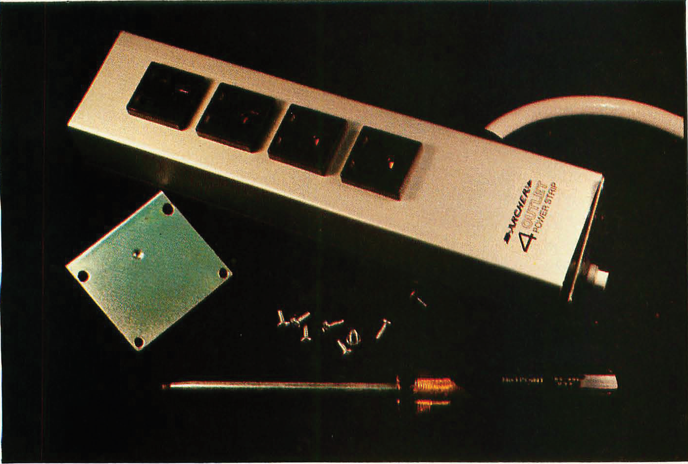
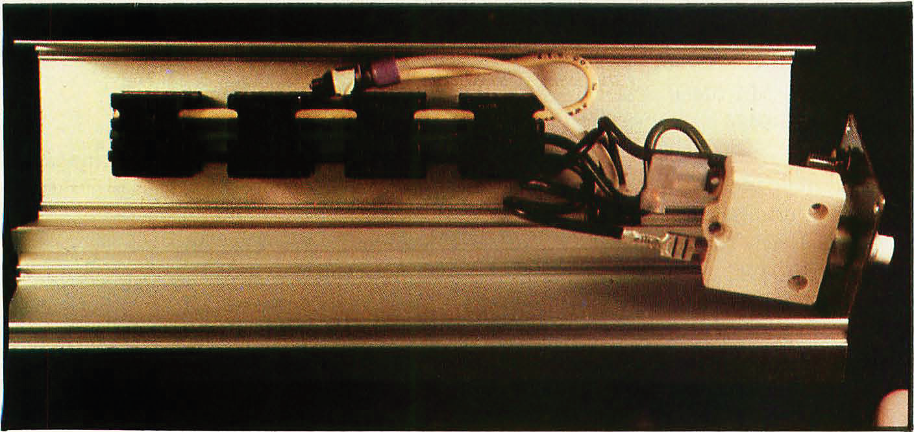
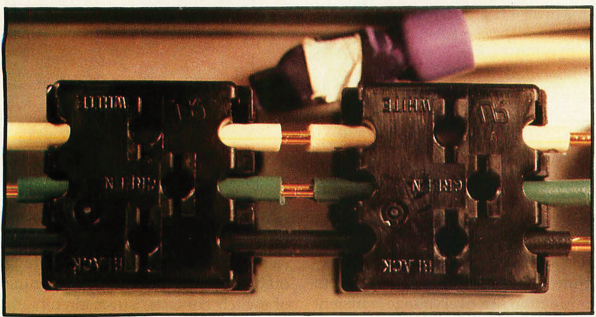
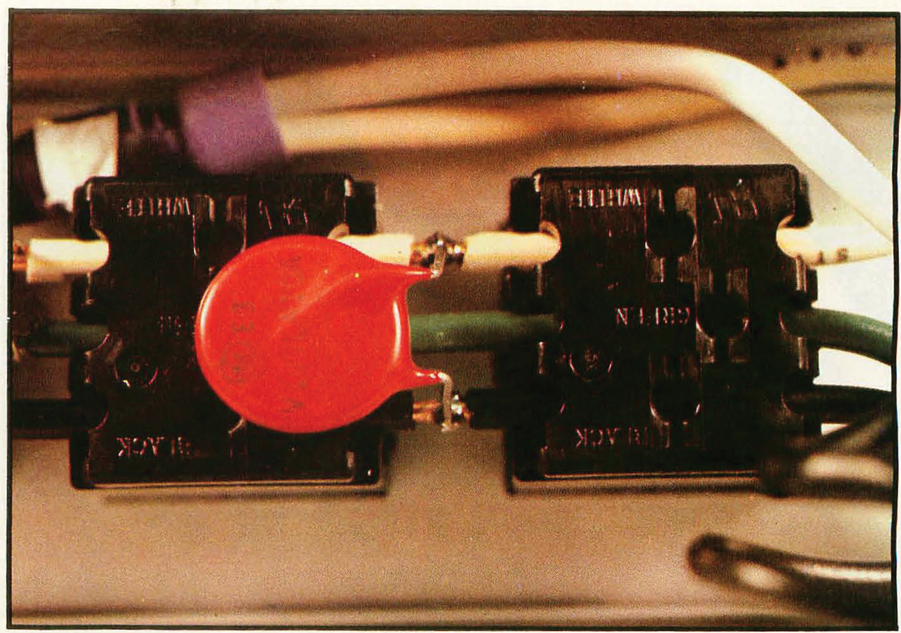
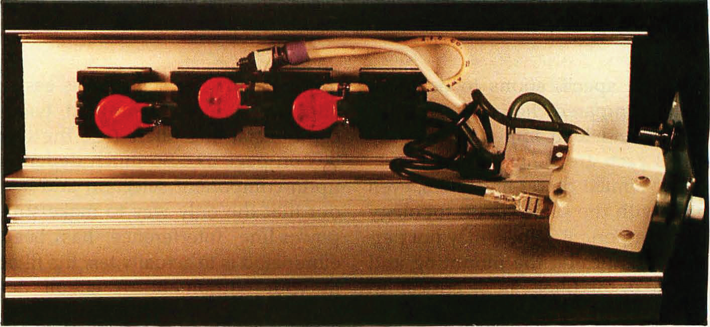
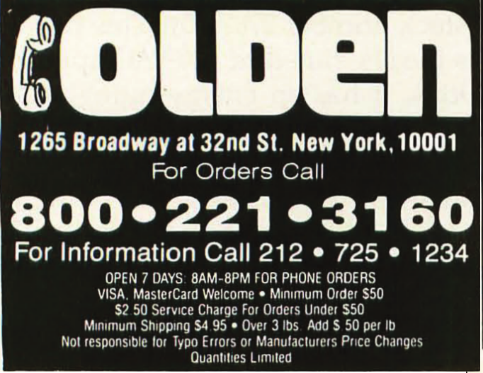

Photo 1: Your computers and other electronic equipment are vulnerable to disturbances transmitted through the power line. Most of the components necessary for transient and noise suppression can be purchased from Radio Shack. Shown here are a commercial EMIElectro Magnetic Interference/RFIRadio Frequency Interference line filter made by Corcom and two General Electric metal-oxide varistors.
Keep Power-Line Pollution Out of Your Computer
by Steve Ciarcia
A visitor once called the Circuit Cellar my mountaintop wilderness retreat. Since he lived in the center of Manhattan, the few oak and birch trees around my house seemed to him like a forest, and because he could view scenery further away than a block or two he must have felt like he was on Mount Whitney. Well, my area is one of the higher points in Connecticut, but that isn't very high. It's barely a prairie-dog mound to someone from Montana. Life in a rural location has its special pleasures. I get to plow the snow from my own driveway, trim back the ever-encroaching foliage and rake the leaves, pile four cords of wood for the stove each winter (see reference 1), fight off the local animal population, and spend large sums of money repairing damage done to my electronic equipment by electrical disturbances. This last item is the only one that really annoys me. Every year I can count on experiencing some equipment failure attributable to an external electrical impulse, usually coming in through the power line.
For three years, just like clockwork, the first thunderstorm in June wiped out a DECwriter II terminal connected to one of my computers. After the first two times of spending a few hours replacing blown chips, I got smart and installed sockets. (Now I even know in advance which chips will be blown.) Last summer I kept the printer unconnected when I wasn't using it. But the elements were not to be denied. During an August thunderstorm, lightning struck my house. I can't say for sure where the bolt ac
36 December 1983 © Byte Publications Inc.
An expensive lesson produces the cheapest Circuit Cellar project yet
tually hit (there were no burn marks or other visible clues), but I suspect the point of entry was the power line. I remember seeing an indistinct flash of light, hearing a tremendous crash, and then standing in darkness. My assistant Jeanette saw a bright blue glow behind one of the computers. Such a tremendous power surge is not kind to semiconductor-based equipment. The casualties included one computer, one video camera, two video monitors, a microwave receiver, and probably several other assorted items I haven't found yet. The damage did not include the DECwriter (safely unplugged since May), but it was over $3000. In December, thunderstorms are not an immediate threat, but as I write this in early September the memory is still fresh and I still have a month of potentially violent weather to contend with. I am forced to consider some defensive measures. Perhaps by relating my experiences I can save you from a similar fate. Of course, lightning isn't the sole cause of electrical disturbances; you don't have to wait for a thunderstorm to be a victim. Many kinds of trouble can be ducted into your computer through the power line. In the January 1981 Circuit Cellar article (reference 2), I wrote about electromagnetic interference (EMI) ElectroMagnetic Interference and radio-frequency interference (RFI) Radio-Frequency Interference . This month I'd like to pick up the saga by describing other forms of electrical pollution that occur on power lines. Afterward, I'll describe a few simple, inexpensive means of dealing with them.The lines leaving your local utility company's generating plant carry electrical power that in most respects is pure, smooth, and constant.
However, as the power is routed through the distribution network, it comes
Copyright © 1983 Steven A. Ciarcia. All rights reserved.
under the increasing aberrant influence of external forces and the connection or shedding of electrical loads. Your susceptibility to these aberrations depends on your location in the distribution system. If you are close to the power plant, you should have relatively few, with the low source-impedance of the generator and short distance of the transmission line limiting the influence of external forces. But rural customers at the end of the line usually experience the full effect. While the utilities try to distribute power evenly, the presence of a large-scale user of electrical power along the line between the generator and you can greatly affect the quality and quantity of the power you get. If you own a personal computer, you should be concerned about the quality of the power you feed it. Power-line irregularities cause problems for computers and other digital equipment because certain kinds of extraneous electrical pulses can be interpreted as data or instructions, causing errors in operation. You face hazards every time you plug in a piece of electronic equipment, but there are certain precautionary measures that can protect your computer. The degree of sensitivity depends somewhat on the type of equipment and the type of disturbances. As the operating speed of digital equipment increases, its tolerance to power-line pollution lessens. High-speed processors and memory components are susceptible to fast transients. (Dynamic memories, which must be periodically refreshed, are particularly susceptible.) Disk drives and displays, on the other hand, are more affected by lasting surges and sags in operating voltage.Electrical power-line disturbances can come from either natural or manmade sources. Of the many ways the power line can be disturbed, the several varieties of voltage fluctuation most often cause problems with computer equipment. These fluctuations can be categorized by source and severity, as follows:
- Blackouts.
-
A blackout is a total power outage—the voltage goes to zero. Obviously if no alternate source of power is available as a backup, computer equipment will be severely affected, and data will be lost. Blackouts generally affect only a small number of utility customers (fewer than 5 percent) during a year and generally last less than 10 seconds.
- Brownouts.
-
A brownout is typically a corrective action taken by the utility when power demand exceeds generating capacity. The utility reduces the output voltage from a nominal 120 V (volts) by 5 to 15 percent. When the voltage is thus reduced, the resistive load presented to the generators by the distribution network consumes less power. Generally speaking, most consumer and industrial equipment designed for use in North America functions properly when supplied with current within the range from 105 to 130 V. But when operating at either extreme, the equipment is more vulnerable to disruption from some other power-line anomaly. Fortunately, power companies rarely reduce the voltage by more than 7 percent.
- Voltage transients.
-
The phenomena of voltage transients include surges of voltage above the specified normal, voltage sags below, and instantaneous voltage spikes that leap far above the nominal levels. Surges and sags are long-duration events occurring at some point in the distribution network when electrical equipment is routinely turned on or off nearby. The magnitude of the surge or sag depends upon the size of the load being removed from or placed on the network. Sags are often produced by the turning on of electric motors, which have high starting currents. (You've probably noticed lights dimming
December 1983 © Byte Publications Inc. 37
How Lightning Strikes
A lightning flash is characterized by one or more strokes with typical peak currents of 20 kA (kiloamperes) or higher. In the immediate vicinity of the stroke's impact on the earth, hazardous voltage gradients exist. It is difficult to establish a definite grounding-conductance value necessary to protect equipment and personnel. The current in a lightning strike is so high that even 1 ohm of resistance can theoretically produce hazardous potentials. When lightning strikes a building unprotected by a lightning rod, the stroke seeks out the lowest-impedance path to earth (most likely through the electric wiring or water pipes).

The important element in lightning protection is the lightning rod, a pointed shaft of copper to which a half-inch copper cable is fastened. The cable in run down the side of the building, where it is clamped to an 8½-foot copper-plated steel rod driven into the earth. The rod system pictured here costs $150.
How It StartsAs the electric charge builds up in a cloud, the electric field in the vicinity of the charge center increases to the point where the air starts to ionize. A column of ionized air, called a pilot streamer, begins to extend toward the earth at a velocity of about 100 miles per hour. After the pilot streamer has moved perhaps 100 feet to 150 feet, a more intense discharge called the stepped leader occurs. This discharge inserts additional negative cluzrge into the region around the pilot streamer and allows the pilot streamer to advance for another 100 to 150 feet, after which the cycle repeats. As its name indicates, the stepped leader progresses toward the earth in a series of steps, with a time interval between steps on the order of 50 microseconds.
In a cloud-to-ground flash, the pilot steamer does not move in a direct line toward the earth but instead follows the path through the atmosphere where the air ionizes most readily. Although the general direction is toward the earth, the specific angle of departure taken by each succeeding pilot streamer from the tip of the previous streamer is unpredictable. Therefore, each 100- to 150-foot segment of the stroke will likely approach the earth at a different angle. This changing angle of approach gives the overall flash its characteristic zigzag appearance.
As a highly ionized column, the stepped leader is at essentially the same potential as the charged area from which it originates. Thus, as the stepped leader approaches the earth, the voltage gradient between the earth and the tip of the leader increases. The increasing voltage further encourages the air dielectric between the two regions to break down.
Attracting LightningObjects extending above their surroundings are likely to be struck by lightning. Thin metallic structures, such as flag poles, lighting towers, antennas, and overhead wires, offer a very small cross-sectional area relative to the surrounding terrain, but ample evidence exists to show that such objects apparently attract lightning. The ability of tall structures or objects to attract lightning serves to protect shorter objects and structures nearby. In effect, a tall object establishes a protected zone around it; within this zone, other structures and objects are protected against direct lightning strikes. As the height differential between the shorter surrounding objects and the tall one decreases, the protection provided to the shorter objects decreases. Likewise, as the horizontal distance between the tall and short structures increases, the protection afforded by the tall structure decreases.
Lightning RodsA protective device that makes use of this phenomenon is the lightning rod, shown in photo. Generally just a sharp copper spike, the lightning rod is attached to the highest point on the structure to be protected. When lightning strikes, the current is shunted directly through a heavy copper wire from the rod to a grounding electrode buried in the earth. Although the duration of a strike is typically less than 2 microseconds, the voltage generated is high enough to cause flashover strikes to conducting objects located as much as 14 inches away from the conducting path. For this reason, metallic objects in close proximity to down conductors should be electrically bonded to the conductors.
But circuits not in direct contact with the lightning discharge path can experience damage, even in the absence of overt coupling by flashover. Because the high current associated with a discharge builds up so fast, large inductively produced voltages are formed on nearby conductors. Experimental and analytical evidence shows that the surges thus induced can easily exceed the tolerance level of many components, particularly solid-state devices. Inductive surges can be induced by lightning current flowing in a down conductor or structural member, by a stroke to earth in the vicinity of buried cables, or by cloud-to-cloud discharges occurring parallel to long cable runs, either above ground or buried.
The MoralThe objective of all lightning-protection systems is to direct the high currents away from susceptible elements or limit the voltage gradients developed by the high current to safe levels. In a given area, certain structures or objects are more likely to be struck by lightning than others; however, no object, whether man-made or natural, should be assumed to be immune from lightning. The voltages that could be induced by such discharges present a definite threat to signal and control equipment, particularly equipment employing semiconductor components.
-
Power-Line Conditioner Sources
- Cuesta Systems Inc. 3440 Roberto Court San Luis Obispo, CA 93401 (805) 541-4160
- Dymarc Industries Inc. 21 Governor's Court Baltimore, MD 21207 (800) 638-9098 (301) 298-2629
- Electronic Protection Devices Division CNS Electronics Corp. 5-9 Centml Ave. Waltham, MA 02154 (800) 343-1813
- Electronic Specialists Inc. 171 South Main St. Natick, MA 07160 (800) 225-4876 (orders) (617) 655-1532
- Isoreg Corporation 410 Great Rd. Littleton, MA 01460 (617) 486-9483
- RKS Industries 4865 Scotts Valley Dr. Scotts Valley, CA 95066 (800) 892-1342 (408) 438-5760
- Sun Research Inc. POB 210 Old Bay Rd. New Durham, NH 03855 (603) 859-7110
-
Power-Line Filter Sources
- Cornell-Dubilier Electronics Box B-967 New Bedford, MA 02741 (617) 996-8561
- Corcom Inc. 1600 Winchester Rd. Libertyville, IL 60048 (312) 680-7400
- Curtis Industries Inc. 8300 North Tower Ave. Milwaukee, WI 53223 (414) 354-1500
- Genisco Technology Corporation 18435 Susana Rd. Rancho Dominguez, CA 90221 (213) 537-4750
- Hopkins Engineering Company 12900 Foothill Blvd. San Fernando, CA '91342 (213) 361-8691
- The Potter Company Division of Varian POB 337 Wesson, MI 39191 (601) 643-2215
- Siemens Corporation 8700 East Thomas Rd. Scottsdale, AZ 85252 (602) 941-6366
- Sprague Electric Company 87 Marshall St. North Adams, MA 01247 (413) 664-4411
- Stanford Applied Engineering 3520 De La Cruz Blvd. Santa Clara, CA 95050-1997 (408) 988-0700
Copyright © 1983 Steven A. Ciarcia. All rights reserved.
38 December 1983 © Byte Publications Inc.
when an air conditioner comes on.)Surges are generally the result of network switching by the utility or of a sudden reduction in demand for power in the network; during the period necessary for the utility's electromechanical compensation system to function, an overvoltage transient condition can exist. The most damaging power-line disturbance is the high-speed, highenergy voltage spike. People speaking loosely about "power-line transients" are probably talking about this type of event. Lasting usually less than 100 microseconds, spikes can be up to 6000 volts. Such high-energy transients are produced by the switching off of inductive loads by the opening of switch contacts, short circuits, or blown fuses; severe network load changes; or lightning. Inductive-load switching accounts for the majority of spikes.
December 1983 © Byte Publications Inc. 39
Photo 2: You can save approximately $40 on the price of a transient-protected power strip by adding the protection yourself, as demonstrated on the Radio Shack Archer 61-2620 unit. First, unscrew the end plates.
Photo 3: Open the strip case, exposing the four receptacles and the white circuit-breaker block. The three wires conducting power run the length of the strip: black is the hot side, white is the neutral return, and the green wire is earth ground.
Photo 4: Using an X-acto knife or similar tool, strip insulation from the wires between the receptacles (which I number 1 through 4, from left to right) according to the following system: between 1 and 2, strip the green and black; between 2 and 3, strip the green and white; between 3 and 4, strip the black and white.
When the coil of an inductive load such as a transformer or motor is suddenly deenergized, the collapsing magnetic field must dissipate its energy, and it does this by placing a large voltage back into the circuit that energized it. Let's examine the process in detail. As the circuit through the inductor is broken, current in the inductor continues to flow, charging the distributed capacitance in the windings. At some point, the charge voltage becomes sufficient to leap across the switch gap as a spark. This sudden shorting action discharges the winding's capacitive charge back into the circuit until the spark ceases. This process repeats in a cycle until there is too little energy left in the coil to create an arc across the contacts. The waveform of inductance-generated transients is oscillatory. For example, a contact opening while conducting 100 mA (milliamperes) in a 1-H (henry) inductance will produce a 3000-V spike, assuming about a 0.001-µtF (microfarad) stray winding capacitance. Whenever you plug in a vacuum cleaner, hair drier, or other appliance (even your computer), you could be creating some potentially serious transient disruptions for other equipment on the same power line. The equipment need not even be on the same wiring circuit. The capacitance of household wiring is often sufficient to couple a transient from one wire to another (differential mode) or from the wire to the ground (common mode). Lightning is the most violent and most destructive source of transient energy. A direct lightning hit is catastrophic, but direct hits seldom occur. A more frequent danger is that a lightning strike on a power line miles away may result in a thousandvolt spike rushing throughout your home. Such hits happen frequently enough to cause much grief.
(Because lightning is such a significant source of transients, I've explained it in detail in the text box "How Lightning Strikes." A secondary, and more widespread, effect of a lightning hit on a power line is a voltage sag over a large part of the
40 December 1983 © Byte Publications Inc.
Photo 5: You can now solder a varistor between each of the stripped wire pairs, mounting it fiat against the back face of the receptacle so that the case will fit together again.
network as the power company's safety circuits compensate for the spike.)Photo 6: The outlet strip with three MOVs installed provides both common-mode and differential-mode transient suppression. After you have finished soldering, carefully reassemble the power strip's enclosure and screw it back together.
- Electrical noise.
-
Miscellaneous electrical noise is the final source of power-line disturbances. It is best understood as high-voltage highfrequency interference. Noise in the range from 10 kHz (kilohertz) to 50 MHz (megahertz) is the most common cause of computer failures. Because of its frequency, noise can be either broadcast through free space from its source or conducted directly through the power lines. Digital electronic equipment is a prime source of high-frequency noise.
I'm not trying to make you afraid to plug your computer into the wall outlet. There are remedies for virtually all the problems I've mentioned, although some are more practical for some computer users than others. If surges or sags are a constant problem for you, you can try having the power company change the tap on your local step-down transformer or installing a constant-voltage transformer on your premises. These measures, although expensive, are effective. If you are plagued by blackouts or have equipment that should never be shut down, I suggest that you consider obtaining an uninterruptible power supply, abbreviated UPSUninterruptible Power Supply. Using a UPSUninterruptible Power Supply gives you confidence in the quality of your power and effectively isolates your computer from damaging perturbations. However, a UPSUninterruptible Power Supply is also quite costly. In the case of electrical noise and EMIElectroMagnetic Interference, there are filters and construction techniques that can be employed to reduce interference, but a better answer is to find the pollution at the source and eliminate it. My article in the January 1981 BYTE outlined most methods of filtration and preventive design. While I'll try not to belabor the point, a power-line filter is an important noise- and transient-suppression device. The best answer to transients is to suppress their voltages to a harmless level, either with filters or a special category of components called transient suppressors.
A power-line interference filter is an electronic circuit used to control RFIRadio Frequency Interference and EMIElectroMagnetic Interference conducted into and out of equipment. The filter is intended to provide unwanted interference signals with a high series impedance (into the vulnerable equipment) and low shunt impedance (to ground). It generally consists of a set of passive components that act as a mismatching network for high-frequency signals-a low-pass filter. The network attenuates RFRadio Frequency energy above 10 kHz, while passing the 60-Hz power.
The simplest possible filter is a single capacitor wired in parallel or a single coil wired in series with the power line. More typically, several capacitors and/or coils are used together, connected into different configurations variously called L, ℼ, and T filters. Though containing only a few components, such passive bilateral networks have complex transfer characteristics that are extremely dependent upon the impedances of the source and load. Because you can't predict these impedances for all applications, it is not possible to unequivocally state that a specific filter configuration will work the same way in two different environments. But to allow
December 1983 © Byte Publications Inc. 41
Photo 7: For quicker and easier, though incomplete, protection, you can plug your computer into a simple voltage-spike protector such as the Radio Shack 61-2790. As you can see from the disassembled unit, the metal-oxide varistor (wrapped in fiberglass tape) is connected between only the hot and neutral lines (black and white). It has no varistor connection to the ground lead and therefore does not protect against common-mode transients.
Photo 8: Some line filters are made to work in specific circumstances. This Radio Shack powerline- filter strip (stock number 26-1451) was devised to cure interference problems with the TRS-80 Model I computer; it contains two separate LC (inductancelcapacitance) interference filters but no varistors. If you have this strip, I suggest you install some MOVs.
The selection is easier and much more controlled using commercial line filters (see the text box on page 39). So much depends upon component selection and layout that the only way to make sure power-line interference has been eliminated is to actually test the filter in your equipment. A circuit designed according to theory using a 50-ohm assumed impedance probably won't work as well as one empirically derived using the actual equipment and power line.
Protection from. the various kinds of line transients is obtained by suppressing or diverting them. The three types of circuits most often used for this are filters, crowbars, and voltage-clampers. As I previously alluded, filters comprising inductances and capacitances are widely used for interference protection, including transients. Since most transient signals are high frequency, the suppression by a filter is often effective, provided it can withstand the associated high voltages.
Crowbar circuits use a switching action, such as turning on a thyristor or arcing across a spark gap, to divert transients. But crowbars that incorporate SCRs (silicon-controlled rectifiers) and triacs are much too slow to effectively suppress 100-µs (microsecond) transients. Most often they are incorporated in low-voltage DC Direct Current power-supply output circuits where overvoltage conditions occur at more manageable speeds (milliseconds). Spark-gap devices, which include carbon blocks and gas tubes, are fast
42 December 1983 © Byte Publications Inc.
Figure la: The Radio Shack four-outlet power strip can be easily modified to protect equipment from high-energy power-line transients. Three General Electric V130LA10A metal-oxide varistors (MOVs-Radio Shack number 276-570) are connected between the hot, neutral, and ground wires of the power line.
Figure 1b: For added protection against low-energy electromagnetic and radio-frequency interference, the Corcom 5VK1 line filter (Radio Shack 273-100) can be installed in the circuit.
Voltage-clamping devices, on the other hand, have impedances that vary as a function of either the voltage across or the current through them. The circuit being protected is unaffected by the presence of the clamping device unless the incoming supply voltage exceeds the clamping level, as would be the case when a transient hits. The various kinds of high-speed voltage-clamping devices include selenium cells, zener diodes, silicon-carbide varistors, and metaloxide varistors. Of these, the metaloxide varistors, or MOVsMetal Oxide Varisistors, hold a Significant price/performance advantage and are highly applicable in personal computing applications.
Metal-Oxide Varistors are voltagedependent nonlinear devices that behave somewhat like a back-biased zener diode. When a voltage lower than its conduction threshold is applied across it, the MOVMetal Oxide Varisistor appears as a nonconducting open circuit. But if the applied voltage becomes greater than this set point (when a transient hits), the MOVMetal Oxide Varisistor begins to conduct, clamping the input voltage to a safe level. In effect, the MOVMetal Oxide Varisistor absorbs the transient and dissipates the energy as heat.
An MOVMetal Oxide Varisistor is made of zinc oxide combined with small amounts of bismuth, cobalt, and manganese. The individual zinc-oxide grains form many p/n (positive-doped/negativedoped) junctions that combine in a multitude of series and parallel arrangements. This diversity of microstructure causes its nonlinear semiconducting characteristics. An MOVMetal Oxide Varisistor is inherently more rugged than a single-junction semiconductor device (a zener diode, for example) because energy is uniformly absorbed throughout the bulk of the component.
The physical dimensions of the MOVMetal Oxide Varisistor determine its characteristics, its conduction-threshold voltage varying as a function of thickness, and its energy-dissipating capacity varying according to volume.
MOVsMetal Oxide Varisistors are available in operating voltages from 6 to 2800 V, with peak current capacities of up to 50,000 A (amperes). MOVsMetal Oxide Varisistors respond to transients in only a few nanoseconds and are relatively inexpensive. The chief producer of MOVsMetal Oxide Varisistors is the General Electric Company.
Large companies sometimes solve power-line problems by producing their own power. In the home or small office, it's more practical to protect your computer and peripherals through comprehensive application of filtering and transient suppression. Most of the commercially available filtered power strips contain MOVsMetal Oxide Varisistors as their primary suppression device. Even those costing $50 or $75 rarely contain more than $5 worth of transient protection. By purchasing the suppression components separately and installing them yourself, you can save a lot of money.The majority of the projects I've presented in Circuit Cellar articles can be built for $50 to $2000, but the project this month wins hands down for economy. For the most part, line filters and MOVsMetal Oxide Varisistors are available off the shelf, and adequate transient suppression for your computer might cost as little as $1.59!
You can take two approaches in installing suppression. If you are interested in protecting only a few items of equipment, MOVsMetal Oxide Varisistors can be wired across the AC line where it enters the enclosures. You can find the General Electric V130LA10A MOVMetal Oxide Varisistor component at Radio Shack for $1.59 (stock number 276-570). This device is ideally suited to 120-VAC applications. It has an energy rating of 38 joules (watt-seconds) and will clamp to 340 V at 50 A within 35 ns (nanoseconds). Its peak-current rating is 4500 A. (For heavier duties, you'll need to use V130LA20A or V130PA20A MOVMetal Oxide Varisistor.) (As a rule, if you are going to be
December 1983 © Byte Publications Inc. 43
Circle 239 on inquiry card.
COMPUTERS
Packages: Create your own
configuration. CALL
- IBM PC:
-
(in Slack) 256k. (2) 320k disk
drives. Monochrome Display
& Controller with printer port. C. Itoh F10-40ps letter quality printer,
Diagnostic & Basic manuals . . . . . . . . . . . . . . . . . . . $4999 - COLUMBIA MPC 1600-1:
-
128k. (2) 320k disk drives. Amber or
Green video display and controller. (2) serial & (1) parallel port. C.
Itoh F10-40cps letter qual. prnter., $3000 of free software $3999 - COLUMBIA HARD DISK MPC 1600-4:
-
XT Compatible 128k,
(1) 320k disk drive. 10meg Hard disk drive. Amber or Green video
display and conlroller. (2) serial & (1) parallel port. C. Itoh F10-
40cps letter quality printer, and $3000 of free software .... $5699 - COLUMBIA PORTABLE COMPUTER VP:
-
128k. (2) 320k
half height disk drives. Monochrome display and controller. (1)
serial & (1) parallel port. C. ltoh F10-40cps letter qualily printer, and
$3000 of free soltware .................................$3795 - EAGLE PC- 2:
-
128k. (2) 320k disk drives.
monochrome display &
conlroller. (2) serial & (1) parallel port. DKIDATA 92a near letter
quality printer, with free software . ...................... $3399 - APPLE IIe:
-
128k, 80 columns display, Amber
or Green screen, half
height disk drive & controller, Fan and electrical surge protector,
Gemini Star 10X dot matrix printer .................... $2199 - CANON AS100
-
128k, (2) 640k disk drives
& controller. color dis-
play. (1) parallel port. with color printer ............ $3599 - DEC RAINBOW 100:
-
64k, (1) dual disk drive.
Monochrome dis-
play, keyboard. MSDOS or CP/M 86 operating system. DEC LA50-
RA dol matrix printer ......... $3799
IBM PC & COMPATIBLE ACCESSORIES
64k memory chips...... $92
additional disk drives $450
DOS 1.1 .............. $40
DOS 2.0 .............. $60
Easywriter ........... $165
Visicalc ............. CALL
dBASE II ............. $430
PFS report ...... $133
PFS filter ...... $110
TK! Solver ...... $250
WordStar ........ $327
MailMerge ....... $165
Memorex disks ... $3.25
3M disk ......... $2.99
APPLE IIe & COMPATIBLE ACCESSORIES
JAGUAR half height
drives ................. $249
MICRO·SCI full height
drives ................. $220
80 column cards ........ $275
80 column with 64k cards $375
Grappler ............... $140
System Saver Fan ....... $55
WordStar ............... $327
dBASE .................. $430
Memorex disks .......... $3.25
3M disks .................. $2.99
PRINTERS
-
C. Itoh ProWriter .... $440 -
OKIDATA
MICROLINE 82a ....... $440
MICROLINE 92 ........ $499
MICROLINE 93 ........ $789
RIBBONS ............. $4.99
DOT MATRIX
-
LETTER QUALITY
-
C. IT0H
F10-40cps ......... $1199
F10-55cps ......... $1499
Single sheet feeder $695
Tractor feed ...... $275
Ribbons-multistrike $6.99
Ribbons-nylon ..... $7.99
NEC 3550 ... $1899 -
GEMINI
STAR 10X ... $335
STAR 15 ........... $490
RIBBONS ........... $4.99 -
TRANSTAR
T315 COLOR PRINTER . $499
Ribbon ............ $14.95 -
DIABLO
620 ............... $999
630 ............... $1999
Single sheet feeder $1350
Tractor leed ...... $215
Ribbons-multistrike $6.99
Ribbons-nylon ..... $7.99 -
TTX-1014 ...... $499 -
SMITH CORONA TP-1 .. $499
MONITORS
- 121 .. $93
- 122 .. $129
- 123 .. $139
ZENITH
- RGB I .. $325
- RGB II .. $520
- GREEN .. $159
- AMBER .. $169
TAXAN
- COLOR I .. $299
- COLOR II .. $429
AMDEK
GORILLA HI-RES GREEN .. $99
PRINCETON GraphicSys .. $665
SOFTWARE
-
APPLE SOFTWARE
-
Temple of Apshai ... 29.99
DOS Boss ........... 19.99
Type faces ......... 14.99
Apple Panic ........ 21.95
Chopliner .. . ..... 24.95
Raster Blaster ..... 21.95
Ultima ............. 29.95
MicroWave .......... 24.97
Swashbuckler ....... 23.95
Zaxxon ............. 26.95
-
IBM PC SOFTWARE
-
ALPHA SOFTWARE
Database ........... 99.97
Apple-IBM CnnCtn ... 136.75
Data Base Manager .. 191.75 -
ASHTON-TATE
Financial Planner 430.00
Bottom Line Strtgst ...... 250.00 -
EPYX
Temple of Apshai .... 26.95
Crush, Crumble & Chomp 22.99 -
INFOCOM Zork I/II/III .... 79.00
Sargon II ................ 24.97 -
MICROPRO products WordStar/MailMerge/SpeliStar CalcStar/DataStar/InfoStar
LOWEST PRICES ....... CALL -
MILTON BRADLEY educational
software. All about Division,
Fractions. Commas. Words.
We have Them all ......... CALL
Pie Writer IIe ........... 99.97 -
DIGITAL RESEARCH
CPIM B6 ............. 42.99
Pascal/MI ........... 270.00
IU$ Soltware all in stock
TIM III ............. 302.97
MICROPRO ............ CALL
Microsoft Multiplan . 175.00
Crosstalk ........... 125.00
VISICORP software
Visicalc/Visifile/Visiword, Too
Low to Mention ...... CAll

Copyright © 1983 Steven A. Ciarcia. All rights reserved.
working inside the equipment you should also install line filters. You can buy Corcom type-5VK1 5-A RFIRadio Frequency Interference power-line filters at Radio Shack for $11.95 (stock number 273-100). These units, like the one shown in photo 1, are adequate for most consumer applications and fit in very nicely with existing equipment.)The easier alternative is to modify a regular power strip to include transient suppression. Radio Shack's 4- outlet strip (number 61-2620, costing $15.95) is perfect for this application. Merely open it up and install three MOVsMetal Oxide Varisistors, as demonstrated in the series of photos 2 through 6, connected as shown in figure 1 . One MOVMetal Oxide Varisistor is installed directly between the black (hot) and white (neutral) leads, the second MOVMetal Oxide Varisistor is connected from the black lead to the green (ground) wire, and the third from the white to the green. While you might squeak through by installing one MOVMetal Oxide Varisistor across the line, complete common-mode and differential-mode suppression requires three MOVsMetal Oxide Varisistors. (Photo 7 shows a commercial adaptation of the simplified scheme.) The price for all the parts of the protected power strip is $20.72. If you were to buy a larger power strip or build your own distribution box, you could also add a power-line filter. And if you have a filter strip already on your computer, you might want to check its degree of transient protection (see photo 8).
{kind=link}
{kind=link}
This project may not seem very exciting. I didn't find the idea very exciting, either, until the flash and subsequent smoke coming out of my favorite article-writing computer provided all the excitement I'll need for months. Most of the $3000 worth of damage I had was for equipment plugged into a single circuit, some of it on the same power strip. I had always known the protective value of MOVsMetal Oxide Varisistors, but I thought it wouldn't happen to me. A few dollars' worth of parts could have saved a lot of aggravation. Voltage spikes and power-line disturbances aren't always the result of storm activity. Transient-caused equipment failures can happen any-time.
The events I've described just served as a catalyst for presenting the subject. And even if lightning never hits you, you should know that many of the new computers I have been evaluating this year have shown an increased sensitivity to external interferance, including power-line glitches. You wouldn't want to find your new computer rebooting suddenly at a critical point or discover the memory to be scrambled after you plug in a printer on the same outlet. Transient suppression constitutes an ounce of prevention. You can spend thousands for the cure.
Next Month
A new integrated circuit from National Semiconductor pennits an intelligent video-display tenninal to be built from only 21 chips. ■
To receive a complete list of Ciarcia 's Circuit Cellar project kits available from the Micromint, circle 100 on the reader service inquiry card at the back of the magazine.
Steve Ciarcia (pronounced "see-ARE-see-ah") is an electronics engineer and computer consultant with experience in process control, digital design, nuclear instrumentation, product development, and marketing. In addition to writing for BYTE, he has published several books. He can be contacted at POB 582,Glastonbury, CT 06033.
1. Ciarcia, Steve. "A Computer-Controlled Wood Stove." February 1980 BYTE, page 32.
2. Ciarcia, Steve. "Electromagnetic Interference." January 1981 BYTE, page 48.
3. Roberts, Steven K. Industrial Design with Microcomputers. Englewood Cliffs, NJ: Prentice-Hall, 1982.
Steve often refers to previous Circuit Cellar articles as reference material for each month's current article. Most of these past articles are available in reprint books from BYTE Books, McGraw-Hill Book Company, POB 400, Hightstown, NJ 08250. Ciarcia's Circuit Cellar, Volume I cavers articles that appeared in BYTE from September 1977 through November 1978. Ciarcia's Circuit Cellar, Volume II contains articles from December 1978 through June 1980. Ciarcia's Circuit Cellar, Volume III contains articles from July 1980 through December 1981. Ciarcia's Circuit Cellar, Volume IV, soon to appear, will contain articles from January 1982 through June 1983.
44 December 1983 © Byte Publications Inc.